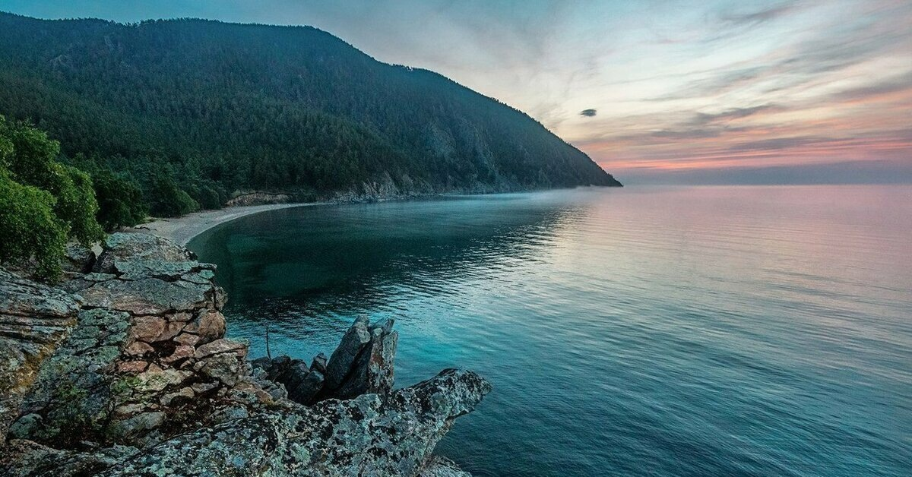

Перейти на главную
Практическое задание №1
Озеро Байкал

Озеро тектонического происхождения в южной части Восточной Сибири площадью 31 722 км².
Самое глубокое озеро на планете, крупнейший природный резервуар пресной воды и самое большое по площади пресноводное озеро Евразии
Морфометрия
- Размеры: 636 х 79,5 км;
- Площадь: 31 722 км²;
- Объём: 23 615,39 км³;
- Береговая линия: 2 000 км;
- Наибольшая глубина: 1 642 м;
- Средняя глубина: 744,4 м.
Гидрология
- Тип минерализации: Пресное;
- Солёность: 0,120 %;
- Прозрачность: 40 м;
Бассейн
- Площадь бассейна: 571 000 км²;
- Впадающие реки: Селенга, Верхняя Ангара, Баргузин;
- Вытекающая река: Ангара.
Ссылка на статью